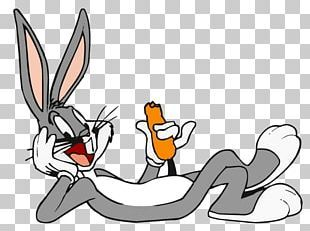
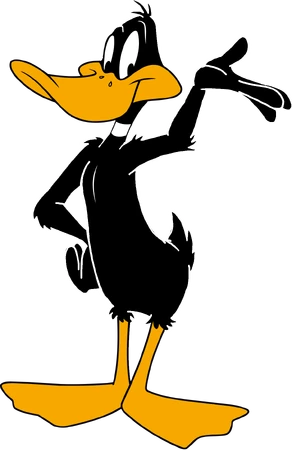
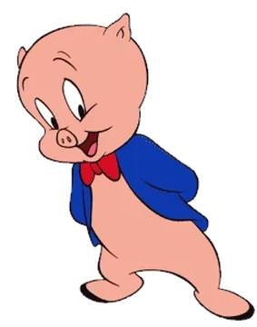
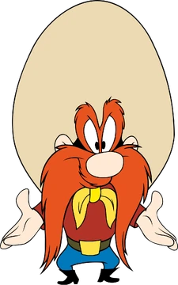

Characters
Bugs Bunny
created in the late 1930s at Warner Bros. Cartoons (originally Leon Schlesinger Productions) and voiced originally by Mel Blanc. Bugs is best known for his featured roles in the Looney Tunes and Merrie Melodies series of animated short films, produced by Warner Bros. Earlier iterations of the character first appeared in Ben Hardaway's Porky's Hare Hunt
Daffy Duck
created in the late 1930s at Warner Bros. Cartoons (originally Leon Schlesinger Productions) and voiced originally by Mel Blanc.[4] Bugs is best known for his featured roles in the Looney Tunes and Merrie Melodies series of animated short films, produced by Warner Bros. Earlier iterations of the character first appeared in Ben Hardaway's Porky's Hare Hunt
Porky Pig
created in the late 1930s at Warner Bros. Cartoons (originally Leon Schlesinger Productions) and voiced originally by Mel Blanc.[4] Bugs is best known for his featured roles in the Looney Tunes and Merrie Melodies series of animated short films, produced by Warner Bros. Earlier iterations of the character first appeared in Ben Hardaway's Porky's Hare Hunt
Yosemite Sam
created in the late 1930s at Warner Bros. Cartoons (originally Leon Schlesinger Productions) and voiced originally by Mel Blanc.[4] Bugs is best known for his featured roles in the Looney Tunes and Merrie Melodies series of animated short films, produced by Warner Bros. Earlier iterations of the character first appeared in Ben Hardaway's Porky's Hare Hunt